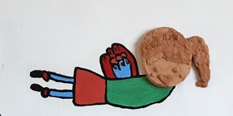

8세 초등1학년 딸은 엄마의 양육 스트레스로 인해 아버지 양육을 강화시켜 아빠의 애정 표현을 충분히 받고 있음에도 불구하고, 눈물을 자주 흘리거나 분노 반응을 보이는 등 정서적 감정 표현 때문에 사소한 자극에도 과도하게 나타냄. 둘째 딸 5세는 아빠보다 엄마의 보살핌을 강조하면서 양육함. 둘째는 피부에 특별한 이상이 없음에도 불구하고 반복적으로 신체를 긁어 상처를 내는 행동을 하기 때문에 꾸중을 하면 몰래 숨어서 지속적으로 함. 또한 둘째딸은 아빠보다 엄마의 반응에 민감하게 반응하고, 눈치를 살피는 경향이 뚜렷하여 부모노릇하기 매우 혼란스럽다고 함.
1. 양육 상황
평소에 편식이 심하고, 입에 맞지 않는 음식에 대해 강한 거부 반응으로 인해 자주 소화 문제나 신체적 불편감을 호소하며 병원 진료가 반복됨. 현재 이층침대를 이용하여 분리 수면 중이나 자녀들의 정서적 안정과 애착 관계 형성의 측면에서 섬세한 접근이 요구됨. 전반적으로 두 자녀 모두 불안정 애착의 특성이 관찰되며, 정서적 욕구가 적절히 충족되지 못한 채 내면에 억압된 감정을 신체 증상이나 부적응 행동으로 표현하고 있는 것으로 보임. 이에 따라 정서적 안정과 자기 조절 능력 향상을 위한 부모역할이 필요함.

2. 정서·심리적 상태
1) 두 자녀 모두 내면에 정서적 긴장과 불안이 자리하고 있으며, 이를 표현하는 방식이 안정적이지 못하고, 신체적 행동이나 감정 과잉반응으로 나타나는 양상을 보임. 첫째 아이는 겉보기에는 아버지의 애정을 받고 있지만, 사소한 자극에도 쉽게 눈물을 보이거나 화를 내는 모습에서 정서적 과민성과 불안정한 감정 조절 능력이 드러남.
2) 일상에서의 스트레스 요인에 대해 안전하게 감정을 해소할 통로가 부족하다는 것을 의미함. 둘째 아이는 반복적인 피부 긁기라는 자해성 행동을 통해 긴장을 해소하려는 방식으로 불안을 조절하려는 양상을 보이고 있으며, 이는 신체화(somatization) 형태의 정서 표현으로 해석될 수 있음. 또한 부모의 제지를 피하고 몰래 행동을 지속한다는 점에서, 정서 표현에 대한 위축과 두려움이 병존하고 있는 것으로 판단됨. 전반적으로 두 아이 모두 내면의 정서가 안전하게 다루어지지 못한 채 축적되고 있으며, 표현 양식이 일관되거나 건강하지 못하다는 점에서 정서 발달의 지연이 우려됨.
3. 자아조절 능력
1) 두 자녀 모두 충동 조절과 정서적 자기조절 능력이 전반적으로 미숙하며, 특히 긴장 상태에서 스스로를 진정시키는 전략이 부족함. 첫째 아이는 감정을 인지하거나 조절하기보다는 눈물이나 분노 등으로 직접적이고 강하게 표현함으로써 자신의 상태를 외부에 알리려는 시도를 보임. 이는 감정에 압도되기 쉬운 기질을 반영하며, 상황에 따라 반응을 조절하거나 기다리는 능력이 충분히 발달되지 않았음을 시사함.
2) 둘째 아이는 정서적 긴장을 신체적 자극을 통해 완화하려는 경향이 강하며, 이는 보다 원시적인 조절 방식으로, 정서와 감각이 통합되지 않은 상태임을 보여줌. 또한, 몰래 행동을 반복하는 모습은 외부 통제에 대한 과도한 반응성과 자기 표현의 억제라는 이중 구조를 내포함.
이러한 자아조절 미성숙은 학령기 이후 또래 관계, 학업 수행, 자아 정체감 형성에 지속적인 영향을 미칠 가능성이 높으므로, 전문적인 개입이 필요함.
4. 부모와의 관계
1) 부모와의 관계는 외형적으로는 안정적인 양육이 이루어지고 있는 것처럼 보이나, 정서적 반응성과 민감성의 측면에서는 애착의 질적 안정성이 낮은 양상을 보임. 첫째 아이는 아버지의 애정 표현을 받고 있음에도 정서적 안정감을 경험하지 못하고 있으며, 이는 양육자의 감정 수용 부족 또는 정서적 공명 결여와 관련될 수 있음. 부모가 아이의 감정을 다루기보다 행동을 문제시하고 통제하려는 태도를 취할 경우, 감정 표현을 위축시키거나 부적절한 방식으로 감정을 표출하게 됨.
2) 둘째 아이는 통제를 피하고 눈치를 보는 행동은 부모와의 관계 속에서 처벌에 대한 두려움과 수용받지 못한다는 경험이 축적된 결과로 해석할 수 있음. 또한 자녀 양육에 있어 일관성과 예측 가능성이 결여되어 있을 가능성도 있으며, 이는 자녀의 정서 안정과 애착 형성에 부정적인 영향을 줄 수 있음.
전반적으로 부모-자녀 간 상호작용의 질이 낮고, 정서적 소통이 단절된 양상으로, 가족 전체의 상호작용을 재구성할 필요가 있음.
5. 자아개념의 특징
1) 두 자녀 모두 자아개념 형성 과정에서 부정적 인식이 내면화되고 있는 특징을 보임. 첫째 아이는 겉으로는 애정을 받고 있으나, 반복적인 정서불안과 과민한 반응을 통해 “나는 충분히 사랑받지 못한다”, “내 감정은 받아들여지지 않는다”는 부정적 자기 인식을 강화하고 있음. 이는 자기 효능감과 자존감 형성에 영향을 주며, 점차적으로 자기 가치감의 저하로 이어질 수 있음.
2) 둘째 아이는 자신의 감정이나 감각을 드러내는 것이 ‘혼나는 일’이라는 학습을 하면서 자기 표현을 억제하고 외부 평가에 지나치게 민감한 자아구조를 형성하고 있음. 반복적인 회피 행동, 눈치 보기, 은밀한 자기 위로 행위는 자기 개방성과 진정성(authenticity)의 저해 요인으로 작용함.
이와 같은 자아개념은 성장 과정에서 또래관계의 어려움, 자기주도적 행동의 제한, 불안정한 정체감으로 이어질 수 있어, 정서적 수용을 기반으로 한 긍정적 자기 개념 재구성이 필요함.
6. 부모 양육 및 훈육 방법
1) 감정을 수용하는 언어 사용하기
아이는 눈물, 분노, 또는 신체 긁기와 같은 행동을 보일 때, 이를 단순히 ‘고쳐야 할 문제행동’으로 보지 않고 그 안에 담긴 감정에 주목해야 함. "왜 울어?", "그만해!"와 같은 통제적 언어 대신, “속상했구나”, “불편했겠다” 등 아이의 감정을 이해하고 반영해 줄 수 있는 감정 언어를 사용함으로써 정서적 안정감을 줄 수 있음. 이 시기에 부모에게 감정을 인정받는 경험은 자기조절력 발달의 기초가 됨.
2) 일관되고 예측 가능한 훈육 방식 유지하기
훈육은 감정적으로 반응하기보다는 일관성 있게 규칙과 한계를 알려주는 방식으로 접근해야 함. 부모의 태도가 상황에 따라 달라지거나 감정적으로 훈육할 경우, 아이는 혼란을 느끼고 스스로의 행동을 조절하기 어려움. 잘못된 행동에 대해서는 사전에 정해진 방식으로 차분하게 반응하고, 잘한 행동에 대해서는 즉각적이고 구체적인 칭찬으로 강화함으로써 안정적인 행동 기준을 학습할 수 있도록 유도해야 함.
3) 신체 감각을 활용한 자기조절 전략 제공하기
둘째 아이처럼 자해성 신체 행동이 나타나는 경우, 단순 제지보다는 대체할 수 있는 감각 자극 도구나 자기 진정 전략을 함께 제공해야 함. 말랑이 장난감, 촉감공, 인형, 스트레스 볼 등 안전한 대체물을 활용하여 감각 자극 욕구를 건강하게 풀 수 있도록 도와주고, 깊은 숨쉬기, 무게담요 덮기, 몸을 감싸 안는 등의 감각 안정 활동을 병행하면 아동의 자아조절 능력을 향상시킬 수 있음.
4) 놀이와 스킨십을 통한 애착 강화
아이와의 정서적 연결은 훈육의 기초가 되며, 이를 위해 일상 속 신체 접촉과 놀이 상호작용을 충분히 제공해야 함. 잠들기 전 포옹, 책 읽기, 함께 그림 그리기, 역할놀이 등은 부모-자녀 간 애착을 강화하는 매개가 되며, 정서적 안정과 자기존중감 형성에 긍정적인 영향을 줌. 특히 분리 수면을 시도하는 경우, 취침 전 스킨십과 정서적 교류를 충분히 나누는 것이 매우 중요함.
5) 부모 자신의 정서관리와 반응성 점검하기
부모가 아이의 행동에 즉각적으로 분노하거나 불안한 반응을 보일 경우, 아이는 부모의 감정을 민감하게 감지하고 자신이 ‘문제가 되는 존재’라고 인식할 수 있음. 부모는 자신의 감정 상태를 인식하고 관리하는 능력을 키워야 하며, 감정적으로 휘둘리기보다 아이의 눈높이에서 차분히 반응하는 것이 중요함. 부모 대상 감정코칭 교육이나 양육 집단 프로그램 참여도 권장됨.
6. 놀이 방법
1) 감정 얼굴 카드 놀이
(1) 활동 내용
다양한 감정을 표현한 얼굴 그림 카드(예: 기쁨, 화남, 속상함, 무서움 등)를 활용하여 아이가 카드 중 현재 감정에 해당하는 얼굴을 고르고, 그 이유를 말하거나 상황을 그림으로 표현하게 함.
(2) 효과
감정 인식 및 언어화를 통해 정서 표현 능력을 증진시키고, 감정을 억압하지 않고 안전하게 표현할 수 있도록 돕는 놀이임.
2) 모래놀이 (자유주제 혹은 주제 중심)
(1) 활동 내용
트레이에 모래와 다양한 피규어(사람, 동물, 나무, 집 등)를 제공하여 아이가 자유롭게 구성하거나, “가장 안전한 공간”, “화가 날 때의 나” 등의 주제를 주고 세계를 만들게 함.
(2) 효과
무의식적인 감정이나 긴장 상태를 안전하게 투사할 수 있는 매개가 되며, 정서 해소와 자기조절을 동시에 지원함. 특히 둘째 아이의 숨은 불안과 긴장을 드러내는 데 효과적임.
3) 촉감 탐색 놀이 (감각 안정 활동)
(1) 활동 내용
말랑이 장난감, 슬라임, 촉감 풍선, 부드러운 천, 고무공 등 다양한 감각 자극 도구를 제공하여 아이가 직접 만지고 눌러보며 촉각 경험을 표현함.
(2) 효과
불안으로 인해 피부를 긁는 자해성 행동을 대체할 수 있으며, 자극에 대한 감각 통합을 돕고 긴장을 해소함. 감각-정서 연결 능력을 회복하는 데 유익함.
4) 부모와의 협동 그림 그리기
(1) 활동 내용
부모와 큰 종이에 함께 그림을 그리거나, 번갈아 선을 그려 그림을 완성하는 놀이로, ‘우리 가족’, ‘행복한 순간’, ‘내가 좋아하는 것’ 등을 주제로 설정함.
(2) 효과
부모-자녀 간 정서적 상호작용과 공동 경험을 통해 애착 형성과 신뢰를 강화하며, 부모의 감정수용적 반응이 아이의 안정감 형성에 기여함.
5) 자기 칭찬 보드 만들기
(1) 활동 내용
아이가 스스로 잘한 일을 그림이나 단어로 표현하여 벽에 붙일 수 있는 ‘자기 칭찬 보드’를 만들어 매일 1가지씩 적어보도록 함. 부모는 이를 함께 읽어주고, 구체적으로 칭찬하며 격려함.
(2) 효과
자아존중감 향상과 자기 효능감 회복에 효과적이며, 외부 평가에 민감한 아동이 스스로 자신의 가치를 확인하도록 돕는 자기 강화 활동임.
2024.07.01 - [이론] - 초등 1학년 자신감 향상 - 도전과 호기심, 리더십 발휘
초등 1학년 자신감 향상 - 도전과 호기심, 리더십 발휘
초등 1학년 자신감의 특징 초등학교 1학년 아동들의 자신감은 학교생활과 사회적 상호작용에 큰 영향을 미칩니다. 이 시기의 아동들은 새로운 환경에 적응하고, 새로운 기술을 배우며, 또래 관
think-sis.co.kr